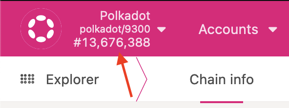

Getting Started
To get started hacking on creditcoin, you'll want to be able to build and run a development node from source.
First you'll need to get set up building from source. After that, take a look at running a development chain
with the creditcoin-node you just built from source. Once you have your development chain up and running
explore your chain
and take a look at the various storage items, extrinsics, and other developer tools available in the polkadotJS explorer.
Once you've taken a look around, you can start learning more about substrate and blockchains in general.
When you're ready to start hacking on creditcoin, get a sense of the architecture and repo layout to see all of the pieces we work with and how they fit together.
Building the creditcoin-node from source
Note on development platforms: development is easiest from a unix environment (whether that be linux, macOS, or WSL). It should be possible to develop natively in windows but you'll most likely be on your own.
Build prerequisites
Install the Rust toolchain
You'll need a working Rust installation, if you don't have one already available (NOTE: you'll want to install and manage your Rust toolchain with rustup,
not by installing your distro's rust package which will most likely be too old).
For the installation you can refer to these instructions.
Once you have a working rust installation, you'll need to add the wasm32-unknown-unknown target and install the nightly toolchain
rustup update
rustup toolchain install nightly
rustup target add wasm32-unknown-unknown --nightly
Note: So that you don't have to specify the toolchain every build, you can set nightly as your default toolchain while working on creditcoin.
You can also check ./ci/env for the toolchain being used in our CI in case you run into issues with newer version before we notice them.
# set nightly as default for your creditcoin checkout
rustup override set nightly
System build dependencies
You'll need a few system dependencies (some extra dependencies may be required depending on the platform, but all platforms require the following):
- Clang
- Protobuf compiler
- CMake
- OpenSSL
MacOS setup
macOS comes with a suitable clang installation, so you don't need to worry about it.
For installing the remaining dependencies the easiest method is using homebrew.
Assuming you have homebrew installed, you can run the following in the terminal:
brew update
brew install cmake openssl protobuf
Ubuntu/Debian setup
Run the following in the terminal
sudo apt update
# May prompt for location information
sudo apt install -y cmake pkg-config libssl-dev git build-essential clang libclang-dev curl protobuf-compiler
Clone the creditcoin repo
If you haven't already, you'll want to clone the creditcoin repo and cd into the resulting clone:
git clone https://github.com/gluwa/creditcoin
cd creditcoin
Build the creditcoin-node
You should now be able to build the creditcoin-node. It's a normal Rust project, so you can perform a release build
(99% of the time you'll want a release build, a debug build is often too slow to be useful).
cargo build --release
Assuming the build completed without errors, you should have a creditcoin-node binary in your target directory.
To make sure the binary works, you can try taking a look at the --help:
./target/release/creditcoin-node --help
Running a Creditcoin node
Running a development node
Now that you've built a creditcoin-node from source, you can get a minimal development node running with:
./target/release/creditcoin-node --dev --mining-key 5GrwvaEF5zXb26Fz9rcQpDWS57CtERHpNehXCPcNoHGKutQY --mining-threads 1
The node should start running and produce output similar to below:
2023-01-05 19:54:53 Creditcoin Node
2023-01-05 19:54:53 ✌️ version 2.211.2-e972d650ee6
2023-01-05 19:54:53 ❤️ by Gluwa Inc.:Nathan Whitaker <nathan.whitaker@gluwa.com>, 2017-2023
2023-01-05 19:54:53 üìã Chain specification: Development
2023-01-05 19:54:53 üè∑ Node name: cute-geese-8080
2023-01-05 19:54:53 üë§ Role: AUTHORITY
2023-01-05 19:54:53 üíæ Database: RocksDb at /var/folders/jw/4ykz4cmj7q7fkjp9t6pv6z7h0000gn/T/substrateLol6Jy/chains/dev/db/full
2023-01-05 19:54:53 ⛓ Native runtime: creditcoin-node-212 (creditcoin-node-0.tx10.au1)
2023-01-05 19:54:53 üî® Initializing Genesis block/state (state: 0x652a‚Ķ44ab, header-hash: 0x6dd1‚Ķ2b4e)
2023-01-05 19:54:53 Using default protocol ID "sup" because none is configured in the chain specs
2023-01-05 19:54:53 üè∑ Local node identity is: 12D3KooWCMzU5LdWErgqjLZxVSwveDjGrRQ7q4zcuycjHocPCNDs
2023-01-05 19:54:53 üíª Operating system: macos
2023-01-05 19:54:53 üíª CPU architecture: aarch64
2023-01-05 19:54:53 üì¶ Highest known block at #0
2023-01-05 19:54:53 Running JSON-RPC HTTP server: addr=127.0.0.1:9933, allowed origins=None
2023-01-05 19:54:53 Running JSON-RPC WS server: addr=127.0.0.1:9944, allowed origins=None
2023-01-05 19:54:53 〽️ Prometheus exporter started at 127.0.0.1:9615
2023-01-05 19:54:58 üí§ Idle (0 peers), best: #0 (0x6dd1‚Ķ2b4e), finalized #0 (0x6dd1‚Ķ2b4e), ‚¨á 0 ‚¨Ü 0
2023-01-05 19:55:03 üí§ Idle (0 peers), best: #0 (0x6dd1‚Ķ2b4e), finalized #0 (0x6dd1‚Ķ2b4e), ‚¨á 0 ‚¨Ü 0
2023-01-05 19:55:03 üôå Starting consensus session on top of parent 0x6dd1a66ff1b0b6482f8da72b829420f10eafa99a6fda25c9f8992fa381d92b4e
2023-01-05 19:55:03 üéÅ Prepared block for proposing at 1 (0 ms) [hash: 0x1293ab00b882c45fc6ebf312992cc127e596d1350b3d2202f3d48dd64ac7d88b; parent_hash: 0x6dd1‚Ķ2b4e; extrinsics (1): [0x93be‚Ķ9e86]]
2023-01-05 19:55:04 üôå Starting consensus session on top of parent 0x1029bb84cb03783d8b927e8b98b48f65b04f0afdb06abc08f2428503b5078572
2023-01-05 19:55:04 ✅ Successfully mined block on top of: 0x6dd1…2b4e
2023-01-05 19:55:04 ✨ Imported #1 (0x1029…8572)
2023-01-05 19:55:04 üéÅ Prepared block for proposing at 2 (0 ms) [hash: 0x07fbf7a2b55b414e4e208a0b75e25735a0855455660667c2834bfcb2e7a2d74f; parent_hash: 0x1029‚Ķ8572; extrinsics (1): [0x51fb‚Ķ557f]]
By default this is a temporary chain, so when you stop your development node the chain will be wiped out. If you want a local development
chain that is persistent, you can use the local chain specification:
./target/release/creditcoin-node --chain local --validator --mining-key 5GrwvaEF5zXb26Fz9rcQpDWS57CtERHpNehXCPcNoHGKutQY --mining-threads 2
Observing the development chain
With a node up and running, it's often useful to inspect the status of the development chain. The Polkadot explorer is the easiest way to take a look at a live chain.
In your browser, open up the Polkadot explorer. Now you'll want to point the explorer at your running development node. In the top left corner, there's a menu accessible by clocking the name of the current chain:

In the newly opened menu, expand the Development section at the bottom, then select "Local Node":

Finally click the Switch button at the top of the chain selection menu:
The explorer should now show the chain running on your local node, and new blocks should be appearing regularly (every 5-30 seconds):

Learning about substrate
The Creditcoin blockchain is built on the substrate framework, which provides most of the underlying blockchain functionality (P2P networking, block production, RPC server, storage, etc.). This allows us to focus on the functionality specific to creditcoin and additionally we benefit from existing tooling developed for the polkadot/substrate ecosystem (such as the polkadot explorer, polkadotJS, telemetry, etc.).
Helpful resources
The official substrate documentation provides a good starting point, I would recommend (at a minimum) reading through all of the material in the fundamentals section.
That should give you a rough understanding of substrate's architecture, and how the pieces fit together.
For learning about FRAME and best practices, the substrate repository has a bunch of pallets of varying complexity that serve as good reference points. For starters, the sudo pallet is fairly small and digestible.
Architecture and repo layout
This chapter is intended to give a sense of the individual pieces in a creditcoin node, how the pieces fit together, and where the code for those pieces live. For the most part, this will talk about the components a creditcoin developer actually interacts with and won't go in-depth into underlying components (like substrate internals).
The main components of a creditcoin-node are the client and
the runtime. The user / node operator interacts with the client
through either the CLI or RPC calls. The client calls into the runtime as needed
using an executor (part of substrate). The runtime is composed using the FRAME
modular framework, which enables reusable modules called pallets. The majority
of creditcoin's business logic is split across a variety of pallets.
%%{init: {'theme': 'dark'}}%%
graph BT
CLI --> Client
RPC[RPC Call] --> Client
Client -->|Executor| Runtime
Runtime -->|FRAME| Pallets
Client / Outer Node
This is the part that handles all interactions with the host machine and outside world.
By extension, the client is the primary point of interaction for node operators - whether that be
through the CLI or by performing RPC calls.
The code for the client lives in the node directory.
CLI
The command line interface you interact with as a user (the creditcoin-node binary) uses
clap, similar to many Rust projects.
The actual interface is defined in node/src/cli.rs. It consists of the
CLI options and subcommands.
The actual parsing and execution of the CLI command occurs in command.rs.
This is the entrypoint to a creditcoin node (main just calls into command::run)
For most subcommands this means calling the appropriate implementations provided by substrate.
When running a node (as opposed to a subcommand), we call into the service module to actual construct
the client.
Service
This is where we put together all of the pieces of the client - configuring storage, kicking off networking, setting up the RPC server, connecting to telemetry, setting up the block import pipeline (and consensus, which is part of the import pipeline), and more. This is also the entrypoint to mining (we just spawn a bunch of threads which are tasked with mining and submitting results).
This code lives in node/src/service.rs.
RPC
This is where we define custom RPC methods and extend the standard RPC server with our custom method handlers. For example, we expose a custom RPC method for retrieving your node's current hashrate so node operators can monitor their mining performance.
The code for extending the RPC server with custom handlers lives in node/src/rpc.rs. Once
you've defined your custom RPC methods and their handlers, you would need to edit this code to register your new handlers.
The code for defining new RPC methods is currently located in node/rpc.
Consensus / PoW
The client also contains consensus-related code. Creditcoin uses Proof of Work, which requires block authors to generate solutions to a problem (mining) and if a "good enough" solution is produced then a block can be authored. The majority of the actual consensus is implemented in substrate, so the only parts we have to worry about are providing the difficulty, verifying a given solution, and generating solutions (mining).
Difficulty
The difficulty is actually determined in runtime logic, so on the client-side we use a runtime API to call into the runtime
logic and get the difficulty for the current block. More specifically, the difficulty adjustment and management occurs in the
difficulty pallet (detailed in the runtime section).
Verifying a Solution
First to clarify, in our case the "problem" miners are solving is the following:
encode(arg) = SCALE encode arg to bytes
sha3(bytes) = calculate sha3 hash of the given bytes
concat(a, b,...) = concatenate a, b, ...
// H256 is a 256-bit hash type, U256 is a 256-bit unsigned integer type
def do_work(difficulty: U256, pre_hash: H256, nonce: H256) -> H256:
return sha3(concat(encode(difficulty), encode(pre_hash), encode(nonce)))
def is_solution(work: H256, nonce: H256, difficulty: U256, pre_hash: H256) -> bool:
calculated = do_work(difficulty)
// U256.MAX is the maximum value for an unsigned 256-bit integer, i.e. 2^256 - 1
return work == calculated and U256(work) * difficulty <= U256.MAX
// choose a nonce such that is_solution(do_work(difficulty, pre_hash, nonce), nonce, difficulty, pre_hash) == True
Given a proposed solution, we consider it valid if
- The hash is correct (matches the value obtained by recalculating the hash from input data)
- The product of the hash and difficulty do not overflow a 256-bit unsigned integer. In other words
hash * difficulty <= 2^256 - 1
This code lives in the sha3pow crate.
Generating Solutions (Mining)
Mining comes down to essentially picking random nonce values until you find one with the correct properties.
Once we find an appropriate nonce, we submit the solution to a MiningHandle which then proceeds with verification and moving forward
with publishing the block. This occurs in service.rs in the creditcoin-node crate.
Runtime
What is a runtime?
At a high level, the runtime is the "business logic" of the chain. More precisely, the runtime primarily acts as the state transition function for the blockchain. Roughly you can think of each block as containing a set of operations to perform (transactions) and a snapshot of the state of the world after those operations have been carried out. Then, to link a series of blocks together each block has a pointer to its predecessor. The runtime, then, is what dictates how to actually execute those operations and how the state of the world is modified in the process. You may also see the runtime and its components referred to as the on-chain logic. On-chain in this context means an execution environment that can modify the state of the chain, and all modifications to state will be tracked and recorded.
How is the runtime organized?
Substrate (which creditcoin builds on) uses the FRAME framework to define independent modules (called pallets) which can be composed to build up the runtime. So, for instance, you might have a pallet which maintains balances for a set of accounts and provides operations on those balances (transfer funds, deposit funds, withdrawals, etc.).
The creditcoin-node-runtime crate (found in the runtime directory) is where we glue together all of the pieces of on-chain logic, and
basically consists of configuring all of the pallets we use and incorporating them into the runtime.
For each pallet, you'll probably have a Config trait which allows pallets to be generic over certain types
that can be configured at the runtime level. For instance, here is where we decide that block numbers are
represented by a u32 and balances by a u128. For each pallet the runtime has to implement the Config trait.
Some pallets also define runtime APIs. For the most part you can ignore these, but for context runtime APIs are essentially an interface for the outer node/client to call into the runtime. So, for instance, if you wanted to expose an RPC that needed some information from the runtime, you would define a runtime API, implement the logic in the runtime, and then call your runtime API from the RPC handler.
Pretty much the entirety of the runtime is in lib.rs. If you need to increase the runtime version
(required after non-backwards-compatible changes to the runtime, i.e. any consensus-affecting change) that's in version.rs
What pallets do we use?
A bunch.
External Pallets
These pallets are all part of substrate and aren't maintained by the creditcoin developers:
Internal Pallets
These pallets are written and maintained by the creditcoin developers:
The majority of the creditcoin developers' work is spent developing these pallets (and probably more in the future).
Creditcoin Pallet
The creditcoin pallet contains the logic for the loan flow (as outlined in the creditcoin whitepaper). That means
it defines all of the data structures used in the process of recording loans, it also maintains the storage
of loans and their associated data, and provides extrinsics to interact with the loan cycle. In general, each operation
in the loan cycle maps to an extrinsic, for instance registering an external address corresponds with the register_address
extrinsic.
For the most part the business logic is pretty straightforward, and isn't changed often since it's meant to adhere to the specification of the white paper (mostly), so I won't talk too much about it. The primary exception to this is our interactions with external blockchains.
Verifying External Transactions
As part of the loan cycle, users can report a transfer of funds that occurred on a different blockchain. For instance, Alice and Bob are in a loan where Bob leant Alice 100 ETH (Bob is a high-roller). Upon initiating the loan, Bob would send the funds to Alice on ethereum, and then report the transfer on creditcoin to indicate he had funded the loan. Instead of just trusting that Bob really did send 100 ETH through ethereum, we want to verify that is the case. The idea is simple - call some ethereum RPCs to pull information about the transaction and verify that it matches what Bob claimed. That RPC call, though, requires some extra work.
Offchain Interactions
Since an RPC call requires network access, it is inherently non-deterministic. You might perform the call and get one result, and someone else might perform the same exact call to the same exact RPC node only to receive a different result (due to transient network errors, solar flares, bad luck, whatever else). This is bad because if we can't repeat the exact execution, it would be impossible to replicate and verify which defeats the purpose of blockchains! Because of this, substrate disallows non-determinism in code executing in an on-chain context. That means that the non-deterministic work needs to occur off-chain. To facilitate this pattern, substrate provides "offchain workers." Basically it's just a special function (a runtime hook, to be precise) defined by a pallet that runs on each block, and it runs in an off-chain context. This means that code running under offchain workers can access, for instance, the network.
Offchain workers can freely read from on-chain storage, but they cannot write to on-chain storage. This means that the only way for the offchain worker to communicate back to the chain is by sending transactions. The general flow for an external transfer is then
- Transfer registered
- Entry put into storage indicating there's a new task to be executed
- Offchain worker starts
- Offchain worker looks at tasks, picks one up
- Transfer verification occurs
- Offchain worker sends transaction indicating the verification succeeded (or failed)
Difficulty Pallet
The difficulty pallet is responsible for storing the difficulty of the current block, and calculating the difficulty for the next block. The fact that this logic lives in a pallet means that we canchange our difficulty adjustment algorithm with a runtime upgrade, which is cool.